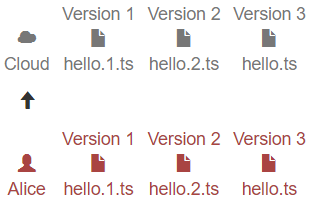

Git是版本控制系统的一种，用来维护多人协作项目的开发进程。
首先来看看单人开发的需求，最原始的VCS就在你我身边😂：一系列word文档
假如在本地保存了多个版本，HEAD总是指向最新的版本：
如果Version 3出现了严重的bug，可以回退到Version
2继续操作。但是如果Version
3包含了很多我们希望保留的change，就需要将其与Version
2比对，而后将这些changes拷贝到Version
2，一个好的VCS就需要支持diff操作帮程序员们找到两个版本之间的差异。
除此之外，为了防止本地机器故障，我们希望把本地的所有版本都在云上备份，这样即使你的设备原地爆炸，也不用担心被老板炒鱿鱼。

另外，你可以借助云的中转实现多地工作。当然偶尔也会出现一些小问题：假如现在云上和本地的稳定版本都是Version
5，你996下班后还想为公司做贡献，就在家里开始对Version
5一顿操作得到了Version 5L却忘了上传，第二天上班在公司又是对Version
5一通different的操作得到了Version
5D并上传，第二天下班从云上直接拉取Version 5D到本地，价值几个亿的Version
5L就再也找不到了...这里就需要merge操作来合并分支。
更重要的是，程序员们可以随时随地借助云上的备份进行协作，完成超大项目的撕逼工作。
为了保证出bug有人背锅，还需要记录who/when/what，VCS里叫做annotate/blame。
1
2
3
4
5
6
7
8
9
10
11
12
13
14
| git init # 将该目录用Git管理
git add haha.txt kaka.txt # 将haha.txt，kaka.txt添加到仓库
git commit -m "upload" # 将文件提交到仓库，本次提交说明是upload
git remote add origin git@github.com:EIMadrigal/Leetcode.git # 将本地仓库与远程仓库关联
git push -u origin main # 将本地库的内容第一次推送到远程仓库
git push origin main # 以后的推送
git rm -r --cached haha # 删除文件夹haha
git status # 查看仓库的状态
git diff # 查看具体修改的内容
git log # 查看提交历史纪录
git show # 提交详情
git checkout -- [file] # 回退
git reset --hard HEAD^ # HEAD表示当前版本，HEAD^表示上一个版本
git reflog # 查看命令的历史纪录
|
代理配置
Windows
Windows设置git bash走代理
1
2
3
4
| git config --global http.proxy http://127.0.0.1:22335
git config --global https.proxy https://127.0.0.1:22335
git config --global --unset http.proxy
git config --global --unset https.proxy
|
Windows设置CMD走代理 1
| set http_proxy=http://127.0.0.1:22335 & set https_proxy=http://127.0.0.1:22335
|
Windows设置Power Shell走代理 1
| $Env:http_proxy="http://127.0.0.1:22335";$Env:https_proxy="http://127.0.0.1:22335"
|
WSL
WSL2配置（以Clash为例）：
- 打开
System Proxy和Allow LAN
- 在防火墙里允许
Clash专用和公用
- 写一个脚本
proxy.sh，然后通过source ./proxy.sh set，source ./proxy.sh unset，source ./proxy.sh test开启、关闭、查看代理
1
2
3
4
5
6
7
8
9
10
11
12
13
14
15
16
17
18
19
20
21
22
23
24
25
26
27
28
29
30
31
32
33
34
35
36
37
38
39
40
41
42
43
44
45
46
47
48
49
50
51
52
53
54
55
56
57
58
59
60
61
62
| #!/bin/sh
hostip=$(cat /etc/resolv.conf | grep nameserver | awk '{ print $2 }')
wslip=$(hostname -I | awk '{print $1}')
port=7890
PROXY_HTTP="http://${hostip}:${port}"
set_proxy(){
export http_proxy="${PROXY_HTTP}"
export HTTP_PROXY="${PROXY_HTTP}"
export https_proxy="${PROXY_HTTP}"
export HTTPS_proxy="${PROXY_HTTP}"
export ALL_PROXY="${PROXY_SOCKS5}"
export all_proxy=${PROXY_SOCKS5}
git config --global http.https://github.com.proxy ${PROXY_HTTP}
git config --global https.https://github.com.proxy ${PROXY_HTTP}
echo "Proxy has been opened."
}
unset_proxy(){
unset http_proxy
unset HTTP_PROXY
unset https_proxy
unset HTTPS_PROXY
unset ALL_PROXY
unset all_proxy
git config --global --unset http.https://github.com.proxy
git config --global --unset https.https://github.com.proxy
echo "Proxy has been closed."
}
test_setting(){
echo "Host IP:" ${hostip}
echo "WSL IP:" ${wslip}
echo "Try to connect to Google..."
resp=$(curl -I -s --connect-timeout 5 -m 5 -w "%{http_code}" -o /dev/null www.google.com)
if [ ${resp} = 200 ]; then
echo "Proxy setup succeeded!"
else
echo "Proxy setup failed!"
fi
}
if [ "$1" = "set" ]
then
set_proxy
elif [ "$1" = "unset" ]
then
unset_proxy
elif [ "$1" = "test" ]
then
test_setting
else
echo "Unsupported arguments."
fi
|
虚拟机配置
- 打开
System Proxy和Allow LAN
- 用
ipconfig查看VMWare Network Adapter VMnet1地址为x
- 将虚拟机的网络连接设置为NAT模式
- 将虚拟机网络中的
Network Proxy设为Manual，ip配为x，端口配为Clash的代理端口7890
- 重启terminal
Refs
Version
Control (Git)
Reading
5: Version Control
日常开发中用到的一些代理配置方式
WSL2配置代理